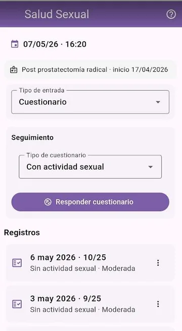
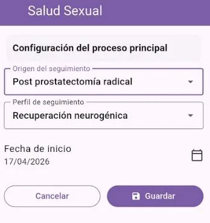
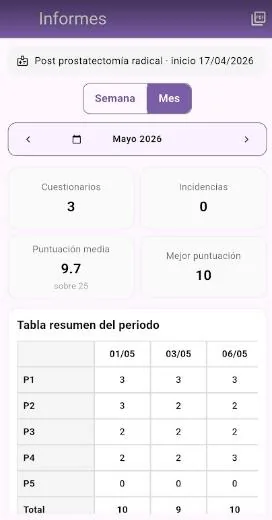
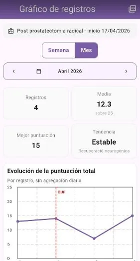

Mòdul Salut Sexual
Manual de Salut Sexual
Guia pràctica per registrar qüestionaris, incidències i revisar l’evolució de la recuperació sexual.

Objectiu
Aquest mòdul permet fer el seguiment de la recuperació de la resposta sexual després de processos quirúrgics, neurològics, hormonals o altres situacions de seguiment clínic.
Registre de dades
1. Respon el qüestionari
Les dades es recullen amb un qüestionari de cinc preguntes, cadascuna amb cinc possibles respostes.
Des de la pantalla principal pots escollir el tipus de qüestionari segons el perfil configurat.
2. Registra incidències quan calgui
També pots registrar incidències relacionades amb el procés de recuperació: inici o finalització d’un medicament, proves, intervencions o observacions importants.
Configuració inicial

Defineix el procés de seguiment
Informa la raó principal del seguiment, com ara cirurgia, radioteràpia, tractament hormonal o disfunció sexual, i indica la data d’inici del període d’observació.
També pots seleccionar el perfil de seguiment: recuperació neurogènica, hormonal, de la funció sexual o altres perfils disponibles.
Informes

Resultats i valoració
A la pantalla d’informes pots filtrar el període, consultar les totalitzacions i revisar la taula de resultats dels qüestionaris.
També s’hi mostra la taula de valoració per ajudar a interpretar les puntuacions de forma orientativa.
Gràfics

Evolució visual
Els gràfics segueixen el mateix criteri que els informes: pots consultar períodes i veure l’evolució de les puntuacions.